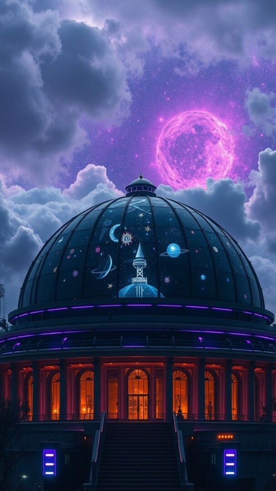
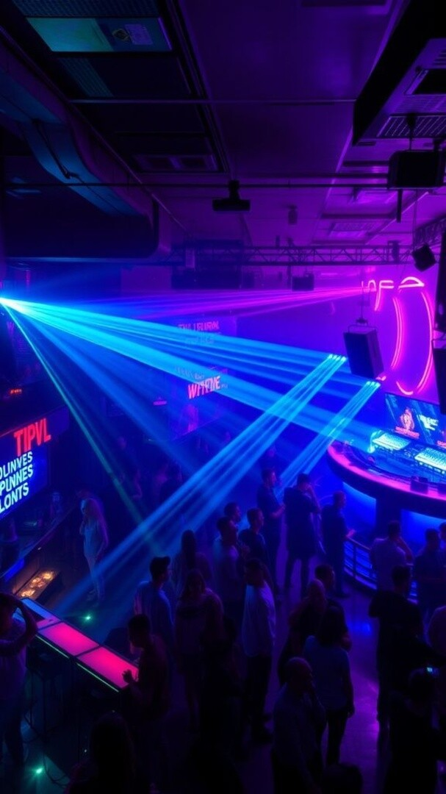
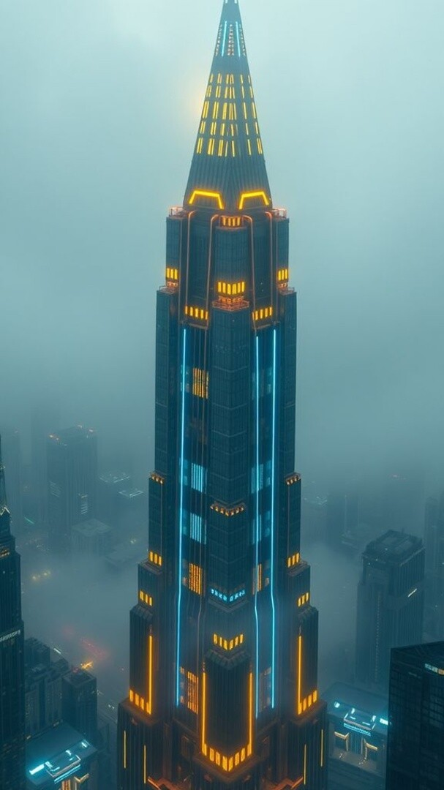
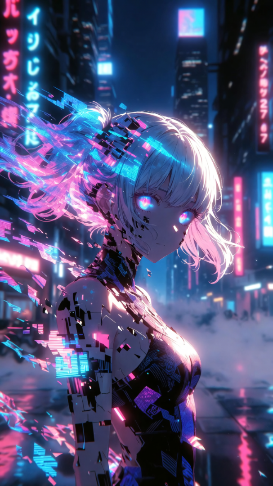
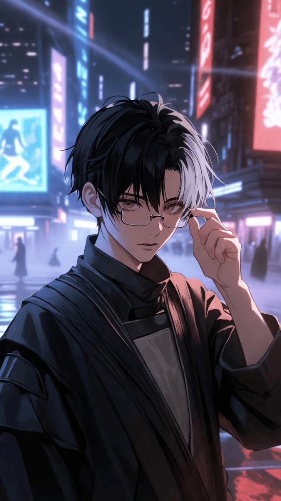
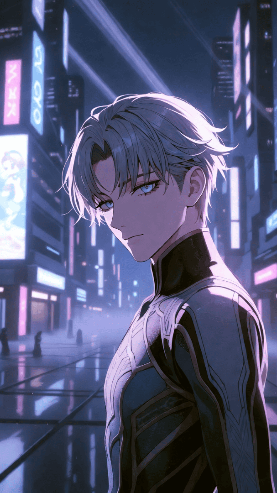

synontech // AI Simulation Game // In Development
A city that breathes. NPCs that remember.
A spatial simulation set in a neon-soaked cyberpunk metropolis. Every NPC is powered by a living ai — they remember your choices, react to your reputation, and evolve with the city around them. This isn't just a game world. It's a world.
From The City



transmission_npc
Every character has a mind of their own. A history. A reason to remember you.



Core Systems
Every character is powered by an LLM. They remember your past interactions, hold grudges, form alliances, and evolve their behaviour over time.
Navigate a living cyberpunk city with distinct districts, factions, and economies. Your reputation spreads — for better or worse.
Natural language dialogue with NPCs that respond in character. No dialogue trees. No predetermined outcomes. Just conversation.
Solo-developed and continuously updated. Features ship fast, bugs get squashed faster. This is a living project, not a vaporware promise.